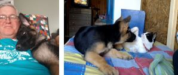
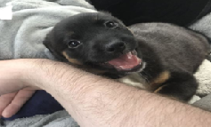
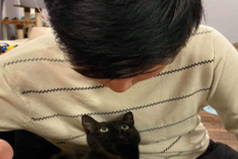
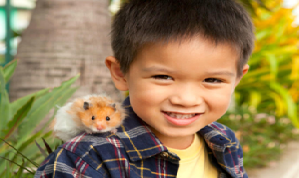

Index
Lenin“Lenin came to our house on February 15, 2021, he was 4 months old. He has always been and is until now a very energetic dog, eager to play and very affectionate with us. From the first day we had a beautiful connection with him, and he stole our hearts, he is a protective and faithful friend." |
Pepito“In October 2020, we suffered the loss of our Nova, a cute brown and white schnauzer with whom lived with us for 13 years, we no longer wanted to experience that suffering again. It was when our daughter taught us a thought of how to overcome the loss and pay tribute to our furry through adoption." |
Gatsby“As a child I always wanted a pet, but my mother was allergic to animals, now that I am an adult, I decided to fulfill my wish, the first time I saw Gatsby I fell in love and I think the feeling is mutual. He is the best cat in the world." |
Big Papa“Our son is very responsible and empathetic, he has wanted a pet since he was 3 years old, we thought that adopting a dog would be ideal for him, but he chose this beautiful hamster that he named big papa, watching him play with him is very cute and creating little meals for him is hilarious." |